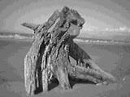

The Church of the Good Shepherd at Lake Tekapo
Day 15 — Sunday 14 Jan
We got our breakfast, settled up and headed out of Queenstown on Highway 6. As we were leaving we went past a couple of bouncy castles, one of which was a bouncy Titanic — depicting the ship sinking.
At Cromwell we turned onto Highway 8 and went past a selection of very big fruit (6ft or so) over the Cromwell name sign, this is apparently because Cromwell is the heart of stone fruit country. We continued on Highway 8, stopping at one of the state picnic spots to stretch our legs — we'd chosen well as there was a lovely babbling brook running by.
We were now driving along through the Southern Alps and beautiful turquoise lakes and rivers. We stopped at the Mount Cook lookout point for a while. The view of the mountain, and some of the other Southern Alps from this point was magnificent, especially over the clear turquoise waters of Lake Pukaki and with a beautiful blue sky behind.
We headed off again and stopped a little further along at Lake Tekapo. We found a cafe and had some lunch before exploring a little more. The turquoise colour is created by rock flour, finely ground particles of rock held in suspension in the glacial melt water. I guess the same is true off Lake Pukaki. We drove round to the "Church of the Good Shepherd" and spent a little time appreciating the views. There is a large clear window behind the altar which provides a beautiful backdrop. The church is used by many different faiths, and was being prepared for a wedding whilst we were there. There is also a statue of a collie dog nearby, this is a tribute to the sheepdogs which helped to develop the Mackenzie Country.
We headed off again and travelled along Highway 8, Highway 79 and onto Highway 1. As we got closer to Christchurch there were more and more English placenames, so we drove through Ealing, Chertsey, past signs for Lincoln, Huntingdon and many more — this is the area a lot of the British immigrants and Christchurch's first settlers landed in the 1850s. We also passed what looked like a llama farm.
We arrived in Christchurch and found a motel with no problem at all — the "Southern Comfort Motel" on Bealey avenue. The owner gave us a choice of rooms and whilst showing them to us we got talking. He is originally from Halifax in Yorkshire and so we had a chat about what brought him and his family out here and what sort of immigration issues there had been.
We settled into our studio and then went for a wander into town. We passed some people punting on the river Avon, and then we headed into cathedral square where we sat for a while next to the Cathedral. We went for dinner at a cafe bar called "Azure" on Oxford Terrace which was really good before heading back to the motel for an early night.
Back at the motel we watched the film "Deep Impact" on channel 2 of the tv. We'd both seen the film before but thought we'd watch it anyway. There were a ridiculous number of commercial breaks in it making it almost unwatchable, and really frustrating.
The Church of the Good Shepherd at Lake Tekapo
Day 16 — Monday 15 Jan
We checked out of the "Southern Comfort Motel" and again the owner gave us some advice on what to do before leaving the area. He suggested driving up to Hanmer Springs on some of the unsealed roads. This sounded fun but we wanted to get to Nelson today and so didn't have enough time to explore.
We left Christchurch on Highway 74 and soon joined Highway 1 again. We motored on until Cheviot where we put some more petrol into the car. We continued on the 1 until getting to the Kaikoura peninsular. We followed the signs to the lookout and got tremendous views over both coasts. We also stopped at the Nga Niho Pa, we didn't manage to see anything there, but we also didn't really know what the tell-tale signs to look for were. We headed into the town centre, passing lots of "Swim with fur seals" and "Swim with dolphins" centres. There are also opportunities for whale watching, even Whale watching flights which seemed kind of odd. I guess you get a better chance of seeing something as you can cover more of a distance, but I wouldn't have thought you get as good a sense of scale. We decided to see what the bakery had for our lunch. We bought bagels and juice and went to sit on the pebble beach. No sooner had we unwrapped our lunch, than a group of seagulls started to hover over us. They were not afraid of us at all and no amount of shooing got rid of them. So, our relaxing picnic lunch turned into a bit of an intimidating time.
We survived and left Kaikoura, and the seagulls, and continued on Highway 1 driving past some beautiful scenery on our way up the coast. The most spectacular stretch was just south of Kekerengu where we stopped briefly to admire the greens of the sea meeting the blue of the sky. It was a really beautiful spot and it would have been great to have spent more time there.
We continued on Highway 1 until Blenheim when we changed onto Highway 6. The road wound through the Bryant Range of hills, with many logging trucks heading in both directions.
We arrived at Nelson and found a room in the second place we tried — the AA motel which gives a discount to members of any of the motoring agencies (AA, RAC etc). We sorted our stuff out before going exploring.
We headed off west out of Nelson, through the sea-side resort Tahunanui and on, down Highway 80 until we got to Rabbit Island — 13km of undeveloped beach with forest behind it. Rabbit Island is, as the name suggests, an island and the bridge to it closes at 9pm. It was only 6pm and so we were fine. The beach was lovely and we had no problem finding ourselves a deserted spot. We unfurled the kite and played with it for about an hour or so before the wind died down. We almost decided to go for a swim but sense got the better of us and we decided it really wasn't warm enough and so headed back to Nelson instead.
Rabbit Island was a great place to spend some time, I'd like to spend some more time around there, and also around Golden Bay. Another place to add to the "next time" list.
We both had showers to wash the salt off us and then headed into Nelson. We walked up Trafalger Street and went for a look at the Art deco Christ Church cathedral. This started being built in 1925, to replace the previous one which had to be demolished because of an earthquake risk, but wasn't completed until 1965 by which time the design had changed.
We had dinner at "Cafe Affair" where we had fantastic food. We shared a starter of local green mussels, which were excellent and then I moved onto a mixture of seafish which was also great. To accompany this we drank a bottle of local white wine — Tasman Bay Sauvignon Blanc 2000 — which was again most pleasant. We chose well.
We returned to our unit and watched some of the news — the NZ president Helen Clark had spent her holiday time in Argentina attempting to climb the highest mountain in the Southern hemisphere. Somehow, I can't see the British Parliament allowing our prime minister to do anything similar.

Driftwood on Rabbit Island
Move on to Nelson to Auckland or go back to the contents page
Comment on the From Queenstown to Nelson section